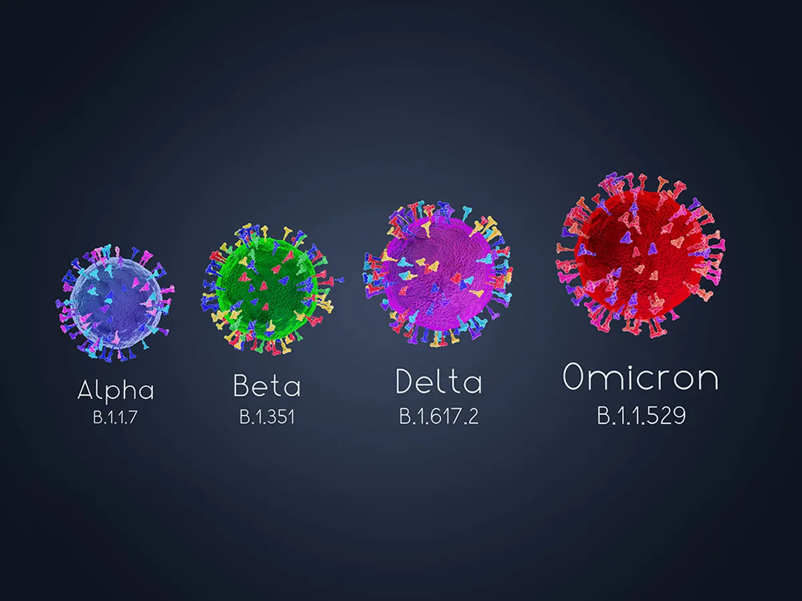

How Many Coronaviruses Are There?
Coronaviruses didn't just pop up recently.
They're a large family of viruses that have been around for a
long time.
Many of them can cause a variety of illnesses, from a mild cough
to severe respiratory illnesses. The new (or “novel”)
coronavirus that causes COVID-19 is one of several known to
infect humans. It's probably been around for some time in
animals. Sometimes, a virus in animals crosses over into people.
That's what scientists think happened here. So this virus isn't
new to the world, but it is new to humans. When scientists found
out that it was making people sick in 2019, they named it as a
novel coronavirus. Experts call these strains
SARS-CoV-2.
How Do Variants Happen?
Coronaviruses have all their genetic material in something
called
RNA (ribonucleic acid).
RNA has some similarities to DNA, but they aren't the same. When
viruses infect you, they attach to your cells, get inside them,
and make copies of their RNA, which helps them spread. If
there's a copying mistake, the RNA gets changed.
Scientists call those changes mutations.
These changes happen randomly and by accident. It's a normal
part of what happens to viruses as they multiply and spread.
Because the changes are random, they may make little to no
difference in a person's health. Other times, they may cause
disease. For example, one reason you need a flu shot every year
is because influenza viruses change from year to year. This
year's flu virus probably isn't the exact same one that
circulated last year.
What Is the Omicron Variant?
The new variant (B.1.1.529)
was first detected in specimens collected on November 11, 2021 in
Botswana. Experts in South Africa first reported the Omicron
variant to the World Health Organization (WHO) on Nov. 24, 2021.
They discovered the variant after COVID-19 infections suddenly
began to go up. The WHO grouped Omicron as a “Variant of Concern.”
This category means the variant might have a higher
transmissibility, cause more intense disease, and may be less
likely to respond to vaccines or treatments. But researchers need
more information to confirm these factors. Early evidence suggests
that the Omicron variant causes a higher risk of reinfection
compared to other variants.
Current PCR tests for COVID-19 can effectively find Omicron cases.
Experts found that one specific PCR test doesn't identify one of
the three target genes (called the S gene dropout) in people
infected with Omicron. Because of this, these tests can
specifically mark positive Omicron cases and, because of that, can
detect this variant faster than with previous surges.
According to research, breakthrough infections are possible
with the Omicron variant even if you’re fully vaccinated.
However, COVID-19 vaccines and boosters are still effective at
preventing severe illness, hospitalizations, and death. The
Omicron variant is now the dominant strain in the U.S.
Omicron “stealth” variant (BA.2): Scientists call it
Omicron BA.2 as opposed to the original Omicron
variant, BA.1. At first, scientists thought BA.2 wasn’t as
contagious as BA.1 and would soon fade away. That didn’t happen,
and starting in January 2022, BA.2 appeared to be at least as
easy to transmit as BA.1. As of the end of February 2022, BA.2
showed signs of spreading more easily than other variants,
though it didn’t seem to cause more serious symptoms. The World
Health organization has said that BA.2 is a “variant of
concern.”
Other Coronavirus Mutations
Alpha (B.1.1.7) . In late 2020, experts noted gene
mutations in COVID-19 cases seen in people in southeastern
England. This variant has since been reported in other countries,
including the U.S. Scientists estimate that these mutations
could make the virus up to 70% more transmissible,
meaning it could spread more easily. Some research has linked this
variant to a higher risk of death, but the evidence isn't strong.
The mutation on the Alpha variant is on the spike protein, which
helps the virus infect its host. This is what COVID-19 vaccines
target. These vaccines make antibodies against many parts of the
spike protein, so it's unlikely that a single new mutation in the
Alpha variant will make the vaccine less effective.

Beta (B.1.351). Other variants of the virus have been found
in other countries, including
South Africa and Nigeria.
The Beta variant appears to spread more easily than the original
virus but doesn't seem to cause worse illness.
Gamma (P.1). In January 2021, experts spotted this
COVID-19 variant in people from Brazil who'd traveled to Japan. By
the end of that month, it was showing up in the U.S. The Gamma
variant appears to be more contagious than earlier strains of the
virus. And it may be able to infect people who've already had
COVID-19. A report from Brazil confirms that a 29-year-old woman
came down with this variant after an earlier coronavirus infection
a few months before.
Delta (B.1.617.2). This variant was spotted in
India in December 2020 . It caused a
huge surge in cases in mid-April 2021. This highly contagious
variant is now found in 178 countries including the U.S., the
U.K., Australia, and all of Europe. It's the dominant strain in
the U.S. and the U.K.
A study of the COVID-19 vaccine's effectiveness against this
variant found that:
-
Two doses of the Pfizer-BioNTech vaccine were
88% effective 2 weeks after the second dose.
-
Two doses of the AstraZeneca vaccine available in the U.K.
were
60%
effective.
-
Both vaccines are only
33% effective 3 weeks after the first dose.
Mu (B.1.621). Experts first spotted this COVID-19 variant
(pronounced m'yoo) in Colombia in January 2021. Since then,
countries in South America and Europe have reported outbreaks of
Mu. In the U.S., the CDC says Mu reached a peak in June 2021, when
it made up less than5%
of variants going around the country. As of early September, it
had been steadily declining.
R.1. Scientists first detected R.1 in a number of
countries, including Japan. There was an outbreak at a Kentucky
nursing home in March 2021, when an unvaccinated health care
worker passed it to about 45 other staff and residents. The WHO
labeled it a “variant under monitoring” in April 2021, meaning
some of its characteristics may pose a future risk to humans. As
of October 2021, the CDC hadn't labeled R.1 as a variant of
concern or interest. Epsilon, Theta, and Zeta were at one point
listed as variants of interest and were downgraded by the WHO.
They are still being monitored.
The virus that causes COVID-19 will probably keep changing.
Experts may find new variants. It's impossible to predict how
those virus changes might affect what happens. But change is just
what viruses do.